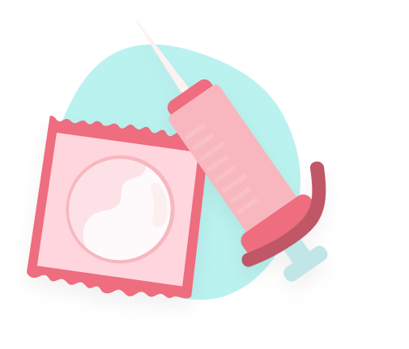
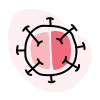

Ada beberapa kasus di mana infeksi menular seksual tidak memunculkan gejala. Meskipun bergejala, hal tersebut baru akan muncul setelah beberapa hari, minggu, atau bulan setelah paparan mikroorganisme.

Kami akan segera menyediakan solusi untuk berbagai masalah infeksi menular seksual.
Jadilah orang pertama yang mengetahuinya!
Infeksi menular seksual (IMS) Umum di Indonesia
Disebabkan oleh virus, bakteri, atau parasit yang ditularkan melalui kontak kulit antar alat kelamin dan hubungan seks tanpa kondom, baik secara vaginal, anal, atau oral.
Human papillomavirus merupakan virus yang biasanya menyebabkan kutil kelamin (disebabkan oleh HPV-6 dan 11) dan kanker kelamin (disebabkan oleh HPV-16 dan 18). Perlu adanya pemeriksaan untuk menentukan jenis virus.
Merupakan infeksi menular seksual sistemik yang disebabkan oleh bakteri Treponema pallidum. Jika Anda menemukan adanya luka pada alat kelamin atau di dalam/sekitar mulut, demam, serta ruam kulit, segera kunjungi dokter untuk memeriksakan kondisi Anda.
Merupakan infeksi menular seksual yang disebabkan oleh bakteri Neisseria gonorrhoeae. Jika Anda mengalami peningkatan keputihan, nyeri saat buang air kecil, dan gejala lainnya, segera kunjungi dokter untuk mendapatkan pemeriksaan menyeluruh.
Merupakan infeksi menular seksual yang disebabkan oleh bakteri Chlamydia trachomatis. Apabila Anda mengalami keputihan yang tidak normal dan sensasi terbakar saat buang air kecil, segera periksakan kondisi Anda kepada dokter!

Merupakan virus yang menyerang sistem kekebalan tubuh. Virus ini dapat memicu terjadinya acquired immunodeficiency syndrome (AIDS). Sangat penting untuk memeriksakan kondisi Anda ketika muncul gejala demam yang disertai dengan keringat malam, sariawan, dan gejala lainnya.
Gabung Bersama Fanita
Dapatkan pemberitahuan saat kami meluncurkan berbagai layanan untuk masalah menstruasi.
Langkah Pemeriksaan
1
Berkonsultasi dengan Dokter
Setelah Anda merasakan adanya gejala di atas, segera kunjungi dokter untuk mendapatkan pemeriksaan menyeluruh. Hal ini bertujuan untuk mendukung diagnosis yang telah diberikan.
2
Pemeriksaan Laboratorium secara Spesifik
Anda perlu menjalankan pemeriksaan laboratorium secara spesifik tergantung pada penyebab infeksinya. Beberapa pemeriksaan perlu dilakukan rutin setiap beberapa tahun sekali sesuai dengan anjuran dokter.
3
Diskusikan Persiapan Khusus yang Diperlukan
Beberapa pemeriksaan membutuhkan persiapan khusus. Oleh karena itu, pastikan Anda telah mendiskusikannya dengan dokter. Untuk memutuskan mana pemeriksaan yang paling tepat dan aman untuk Anda, sangat penting untuk mendiskusikan pro dan kontra dari setiap jenis pemeriksaan.
Tim Medis
dr. Ida Ayu Narayani
dr. Muhammad Isman Sandira